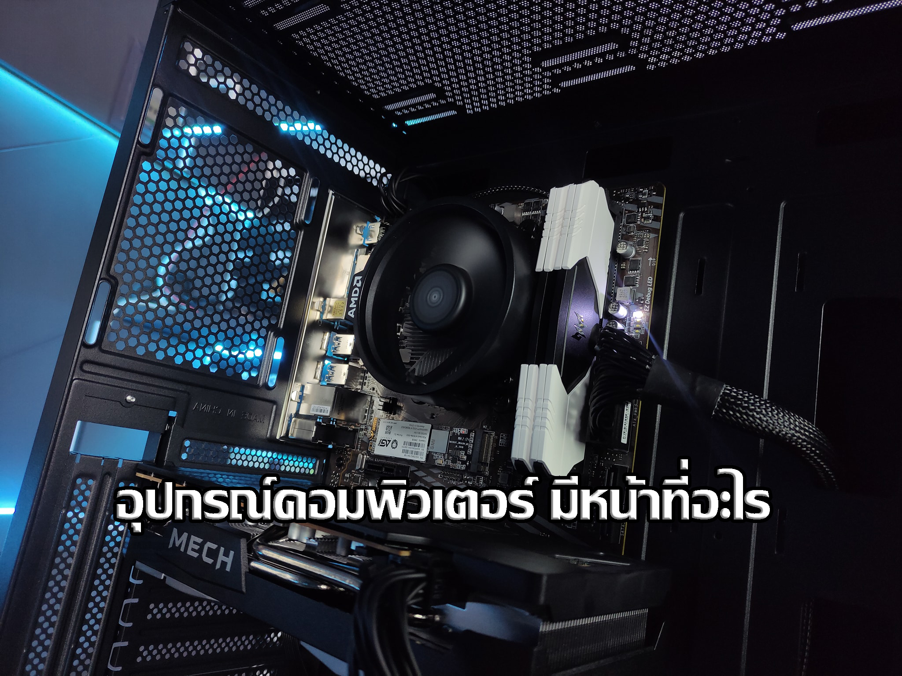
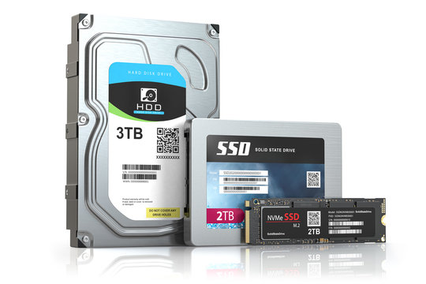

ยินดีต้อนรับเข้าสู่เว็บRAGGA IT |
 |
เว็บ RAGGA IT ของเราเป็นเว็บที่ให้ความรู้เกี่ยวกับทางด้านอุปกรณ์คอมพิวเตอร์ |
| หน้าแรกเราจะมาทำความรู้จักเกี่ยวกับอุปกรณคอมพิวเตอร์ว่ามีอะไรบ้าง ทำหน้าที่อะไรบ้าง และอุปกรณ์คอมพิวเตอร์มีกี่อย่าง |
|  |
อุปกรณ์คอมพิวเตอร์ตั้งโต๊ะ หรือ PC บางคนอาจจะยังไม่รู้ว่ามันเรียกว่าอะไร หรือมีหน้าที่ทำอะไร |
| 1.จอภาพ (Monitor)
จอภาพที่นิยมก็คือ จอแอลซีดี (LCD : Liquid Crystal Display) ซึ่งมี ลักษณะแบนราบ มี ขนาดเล็กและบาง การทำงานนั้นอาศัยหลักของการใช้ความร้อนที่ได้จากขดลวด มาทำการเปลี่ยนและ บังคับให้ผลึกเหลวแสดงสีต่างๆ ออกมาตามที่ต้องการซึ่งการแสดงสีนั้นจะเป็นไปตามที่กำหนด
|
| 2.เคส (Case)
หลายคนเรียกว่า CPU คือโครงหรือกล่องสำหรับประกอบอุปกรณ์ต่าง ๆ ของคอมพิวเตอร์ไว้ภายใน
.jfif)
|
| 3.พาวเวอร์ซัพพลาย (Power Supply)
เป็นอุปกรณ์ที่ทำหน้าที่ในการจ่ายกระแสไฟฟ้าให้กับชิ้นส่วนอุปกรณ์คอมพิวเตอร์ ควรเลือกพาวเวอร์ซัพพลายที่มีจำนวนวัตต์สูงเพื่อให้สามารถจ่ายกระแสไฟได้เพียงพอ
.jfif)
|
4.คีย์บอร์ด (Keyboard) และ เมาส์ (Mouse)
เป็นอุปกรณ์แป้นพิมพ์เพื่อป้อนข้อมูลต่างๆ ลงไปในคอมพิวเตอร์ ส่วนเมาส์จะช่วยในการบ่งชี้ตำแหน่งว่าขณะนี้กำลังอยู่ส่วนไหนบนจอภาพ
 .jfif)
|
| 5.เมนบอร์ด (Main board)
เป็นแผ่นวงจรไฟฟ้าแผ่นใหญ่ที่รวมเอาชิ้นส่วนอิเล็กทรอนิกส์ที่สำคัญไว้ด้วยกัน ซึ่งเป็นส่วนที่ควบคุม การทำงานของ อุปกรณ์ต่างๆ ภายในตัว PC ทั้งหมด
.jfif)
|
| 6.ซีพียู (CPU)
ซีพียูหรือหน่วยประมวลผลกลาง เรียกอีกชื่อหนึ่งว่า โปรเซสเซอร์ (Processor) หรือ ชิป (chip) มีหน้าที่ในการประมวลผลจากข้อมูลที่ผู้ใช้ป้อนเข้ามาทางอุปกรณ์ตามชุดคำสั่งหรือโปรแกรมที่ผู้ใช้ต้องการใช้งาน
.jfif) .jfif)
|
| 7.การ์ดแสดงผล (Display Card)
การ์ดแสดงผลใช้สำหรับเก็บข้อมูลที่ได้รับมาจากซีพียู ซึ่งจะช่วยแบ่งเบาภาระการประมวลผลให้ซีพียูจึงทำให้การทำงานของคอมพิวเตอร์นั้นเร็วขึ้นด้วย ตัวการ์ดมีหน่วยความจำมากก็จะรับข้อมูลจากซีพียูได้มากขึ้น ซึ่งจะช่วยให้การแสดงผลบนจอภาพมีความเร็วสูงขึ้นอีก
.jfif)
|
| 8.แรม (RAM)
RAM หรือ Random-Access Memory เป็นหน่วยความจำหลักแต่ไม่ถาวร หลักการทำงานคร่าวๆ ของแรมนั้นเริ่มต้นที่รับข้อมูลจากผู้ใช้ผ่านอุปกรณ์ Input จากนั้นก็จะส่งข้อมูลไปยัง CPU ในการประมวลผล เมื่อ CPU ประมวลผลเสร็จแล้ว แรมจะรับข้อมูลที่ได้รับการประมวลผลแล้ว ออกไปยังอุปกรณ์ Output ต่อไป
.jfif)
|
| 9.ฮาร์ดดิสก์ (Hard disk)
เป็นอุปกรณ์ที่ใช้ในการเก็บข้อมูลในคอมพิวเตอร์ ฮาร์ดดิสค์ส่วนใหญ่จะประกอบด้วยแผ่นจานแม่เหล็กสองแผ่นหรือมากกว่า
 |
.jpg)


.png)